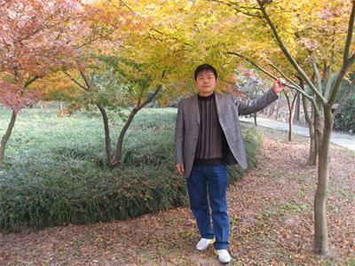
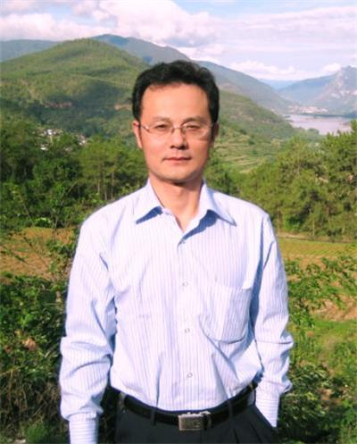
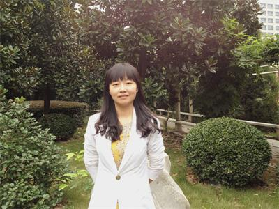
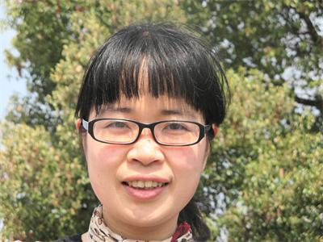
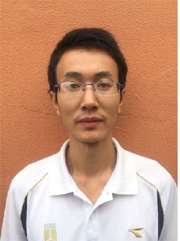

|
爱岗敬业榜  笪国善，省溧中副校长，中学高级教师。曾获溧水县第二届数学学科教学带头人、县先进教育工作者、县优秀班主任等称号。在国家、省、市级刊物上发表教育教学论文十余篇。 教学心语：让课堂充满快乐，让神奇的知识变得平凡有趣  司徒华简介：中学数学高级教师，从教二十七年，担任班主任二十六年，曾被评为“全国优秀教师”，南京市“精神文明建设先进个人”“南京市普通高中班级管理先进个人”“溧水区优秀班主任”，所带班级曾被评为“江苏省先进班集体”“南京市先进班集体”等。 教育心语：遵循教育规律，尊重学生个性发展。
陶维康，市首届好课评比一等奖,县首届初中数学学科带头人，县初中数学中心组成员,多次被评为县优秀党员、优秀班主任、优秀教育工作者 教育心语：教师的生命，因耕耘而芬芳，因开拓而闪光，因奉献而充实。 王萍，毕业于南京师范大学，中学一级教师。区教学先进个人，全国优秀科技辅导员。 教育心语：以诚相待。 职业道德榜
刘夏亲，男，硕士研究生，高中历史教师，中一职称，2014年校德育论文一等奖。 认真做好每一件事，平等对待每一位学生，在平凡的岗位上成就不平凡的人生。 骆小方，英语教师。毕业于解放军国际关系学院，南师大教育硕士。溧水首届教坛新秀，溧水县优靑，南京市教学先进个人。 教育心语：教育、学习皆生活。在生活中学习，在学习中成长。  苗琰，2004年工作至今，区教学先进个人。 教育心语：每一个学生都是好学生。  倪凯群，2001年南师大化学系化学教育专业毕业，南京市教学先进个人，溧水区优秀教育工作者、教坛新秀。 教学心语:靡不有初，鲜克有终。 职业贡献榜
方亚俊，中学一级教师，曾获市教学先进个人，市优秀班集体，区优秀班主任，区优秀共产党员，区优秀青年教师等。 教育心语：以站立的姿态去培养站立的人 葛春生，江苏省特级教师，中学英语高级教师，南京市高中外语学科带头人，市县外语教学核心组成员。 教育心语：是科学，需精雕细镂；教育是艺术，须春风化雨。 李宽珍简介：李宽珍，2002年到江苏省溧水中学工作至今，获“南京市教学先进个人”，所带班级获“南京市优秀班集体”，校“教科研先进个人”、“十佳班主任”等。 教育心语：认认真真工作，老老实实做人。  刘家平，2004年毕业于安徽师范大学，2004至2014年任教于省溧中初中部。 教育心语：用心爱学生才能教好学生。
|
2015年1月善行义举榜
文章来源：admin 点击数：4986 时间：2015-04-29

【上一篇】
2014年11月善行义举榜
【下一篇】
2015年4月善行义举榜